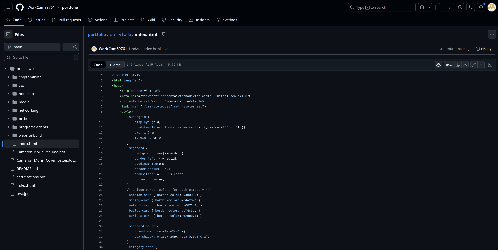

Core Implementation

Technology Stack
Frontend
Vanilla HTML/CSS
Hosting
GitHub Pages
Responsive
Mobile-first CSS
Performance
100/100 Lighthouse
Key Features
- Zero JavaScript framework dependencies
- CSS variables for easy theming
- Optimized image loading with lazy loading
- Dark/light theme ready (CSS variables)
Implementation Highlights
/* Core color variables */
:root {
--bg-color: #2d2d2d;
--text-color: #e0e0e0;
--accent-color: #4b0082;
--card-bg: #383838;
}
/* Responsive grid layout */
.wiki-container {
display: grid;
grid-template-columns: 250px 1fr;
gap: 2rem;
}
@media (max-width: 768px) {
.wiki-container {
grid-template-columns: 1fr;
}
}